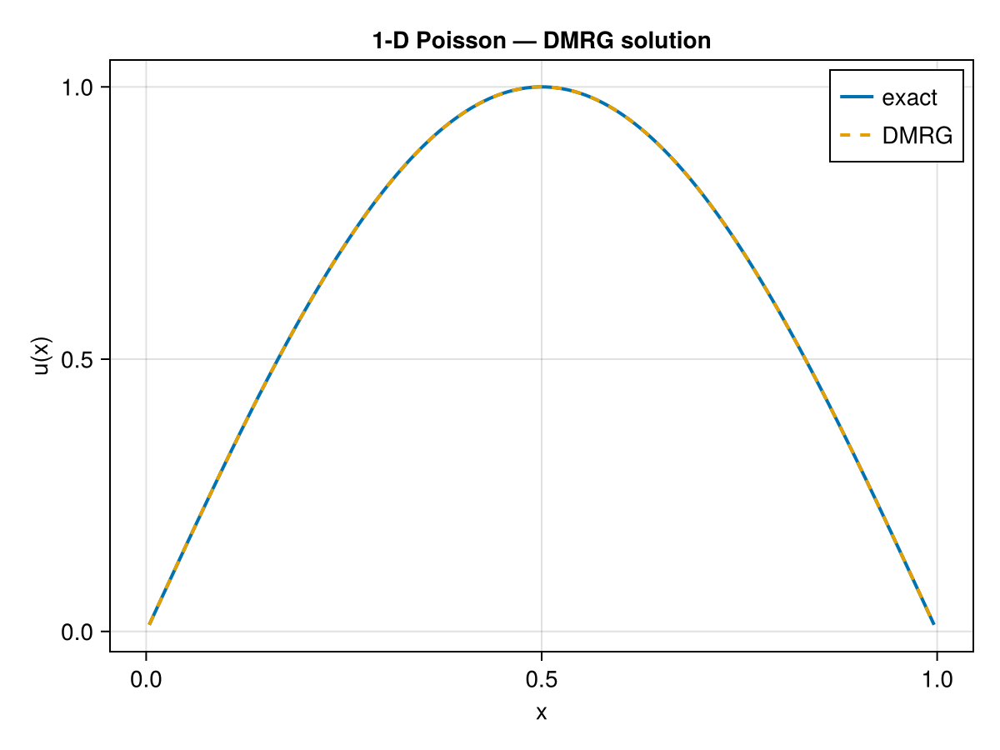

Examples
The examples below are ordered from simplest to most advanced. Each can be run directly after using TensorTrainNumerics and, for plotting, using CairoMakie. For more examples check out the examples folder
1-D Poisson equation
Solve $-u'' = \pi^2 \sin(\pi x)$ on $(0,1)$ with Dirichlet boundary conditions $u(0) = u(1) = 0$. The exact solution is $u(x) = \sin(\pi x)$.
This is the simplest end-to-end demonstration: build the 1-D finite-difference operator in QTT format, set up the right-hand side, and solve with DMRG.
using TensorTrainNumerics
using CairoMakie
d = 8 # 2^8 = 256 interior grid points
N = 2^d
h = 1.0 / (N + 1) # uniform interior spacing: x_i = i·h
xes = h .* (1:N)
A = -(1/h^2) * toeplitz_to_qtto(-2.0, 1.0, 1.0, d)
# RHS and initial guess
b = π^2 * qtt_sin(d; a = h, b = 1 - h)
x0 = rand_tt(b.ttv_dims, b.ttv_rks)
u_qtt = mals_linsolve(A, b, x0; tol = 1e-12, return_info=false)
u_sol = qtt_to_function(u_qtt)
u_exact = sin.(π .* xes)
println("Relative L² error: ", norm(u_sol .- u_exact) / norm(u_exact))Relative L² error: 1.2452469650861731e-5And we can plot the solution
fig = Figure()
ax = Axis(fig[1, 1], xlabel = "x", ylabel = "u(x)", title = "1-D Poisson — DMRG solution")
lines!(ax, xes, u_exact, label = "exact", linewidth = 2)
lines!(ax, xes, u_sol, label = "DMRG", linewidth = 2, linestyle = :dash)
axislegend(ax)
fig
TT-cross approximation
Approximate $f(x_1,\ldots,x_6) = \sin(x_1+\cdots+x_6)$ on a grid without evaluating $f$ on all $n^6$ points. TT-cross selects $\mathcal{O}(ndR^2)$ evaluations instead of $\mathcal{O}(n^d)$ and supports multiple pivot strategies.
The function interface expects a batch: f(X) receives an $m \times d$ matrix of sample points and returns an $m$-vector of values.
using LinearAlgebra
using TensorTrainNumerics
f(X::Matrix{Float64}) = vec(sin.(sum(X, dims = 2)))
n = 8
d = 6
domain = [collect(range(0.0, π, length = n)) for _ in 1:d]
tt_mv = tt_cross(f, domain, MaxVol(tol = 1e-8, maxiter = 20, verbose = false); ranks = 4)
tt_dg = tt_cross(f, domain, DMRG(tol = 1e-8, maxiter = 25, verbose = false); ranks = 4)MPS{Float64} with 6 sites
Physical dims : (8, 8, 8, 8, 8, 8)
Bond dims : [1, 2, 2, 2, 2, 2, 1]
Orthogonality : noneVerify accuracy against the full reference tensor:
tensor_exact = zeros(ntuple(_ -> n, d)...)
for idx in CartesianIndices(tensor_exact)
tensor_exact[idx] = sin(sum(domain[k][idx[k]] for k in 1:d))
end
println("MaxVol relative error: ", norm(ttv_to_tensor(tt_mv) .- tensor_exact) / norm(tensor_exact))
println("DMRG relative error: ", norm(ttv_to_tensor(tt_dg) .- tensor_exact) / norm(tensor_exact))MaxVol relative error: 5.231447985762307e-16
DMRG relative error: 6.514255801810469e-16Quantics Fourier transform
Recover the Fourier spectrum of a sparse-spectrum signal using the QTT Fourier operator. The QTT DFT matrix has bond dimension $\mathcal{O}(K)$ where $K$ is the number of Fourier terms retained, and applies in $\mathcal{O}(Kd R^2)$ operations.
using TensorTrainNumerics
using Random
using LinearAlgebra
d = 10
N = 2^d
Random.seed!(1234)
r = 12
coeffs = randn(r) .+ 1im * randn(r)
f(x) = sum(coeffs .* cispi.(2 .* (0:(r-1)) .* x))
F = fourier_qtto(d; K = 50, sign = -1.0, normalize = true)
x_qtt = function_to_qtt_uniform(f, d)
y_qtt = F * x_qtt
spec = matricize(y_qtt, d)
scale = sqrt(N)
println("Spectral recovery error: ", norm(spec[1:r] .- scale .* coeffs) / (scale * norm(coeffs)))
println("Out-of-band energy: ", norm(spec[(r+1):end]) / norm(spec))Spectral recovery error: 2.21669402201414e-15
Out-of-band energy: 3.680216595866875e-15